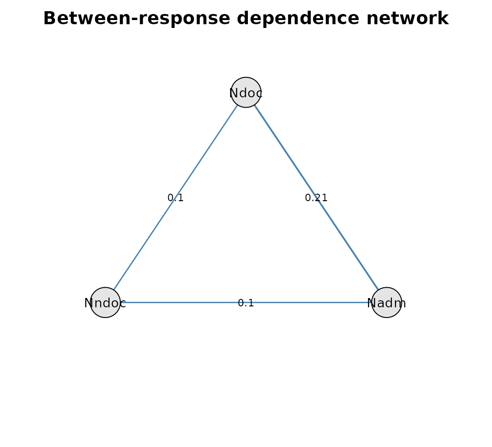
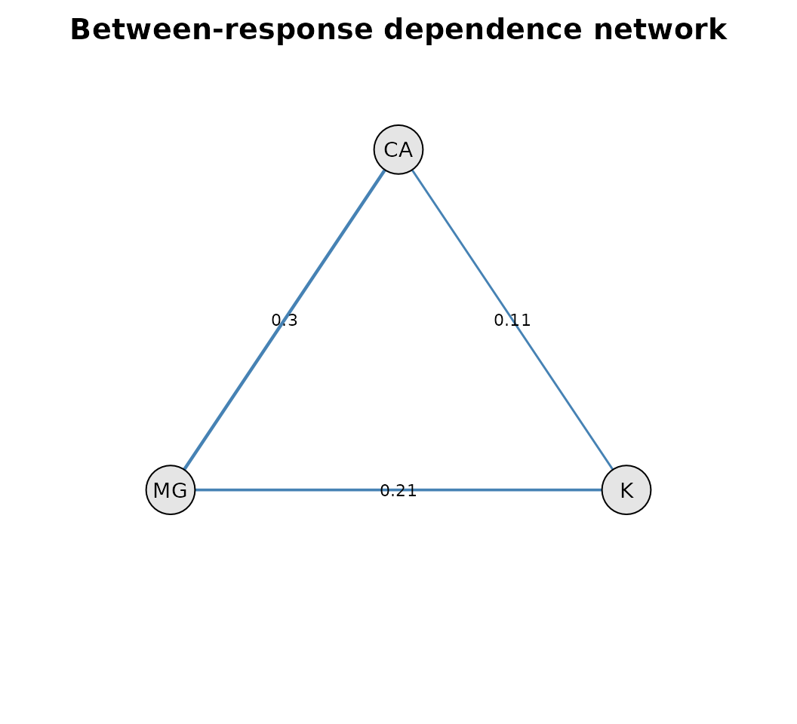

The mcglm Examples Revisited with mcglmgraph
Source:vignettes/mcglm-examples-revisited.Rmd
mcglm-examples-revisited.RmdPurpose
The mcglm package documentation and the article of Bonat
(2018, JSS 84(4)) illustrate Multivariate Covariance
Generalized Linear Models on five datasets: the Australian Health Survey
(ahs), the soybean experiment (soya), the
hunting records of Bioko Island (Hunting), a soil-chemistry
survey (soil) and a neonatal study (NewBorn).
This vignette reanalyzes every one of those examples through the
mcglmgraph paradigm: we keep the original mean and
dispersion specifications but parametrize the residual between-response
covariance with a graphical structure, and we read off
the second-order conditional association pattern that the unrestricted
MCGLM correlation matrix leaves implicit.
Because every mcglm_graph object is also a genuine
mcglm object, all the familiar methods
(summary, coef, vcov,
gof, pAIC, pBIC) keep working;
graph-specific questions are handled through
mc_partial_cor(), mc_plot_network(),
mc_test_independence() and the structure-selection
functions.
The interpretive thread is always the same. The marginal MCGLM fit
supplies standardized Pearson residuals; mcglmgraph then
models their sample between-response covariance
through a structured
.
Inverting the fitted covariance yields the precision matrix
,
whose off-diagonal zeros indicate absence of second-order
conditional association. Under joint normality of the analyzed
residuals this coincides with conditional independence. In a
Gaussian-copula model, the same reading requires a precision matrix
fitted on the latent Gaussian scale, which the Pearson-residual route
does not estimate. In general MCGLMs the safer reading is second-order.
The normalized precision gives the partial
correlations: residual association between two responses after
conditioning on the remaining responses. A retained edge is therefore a
direct residual association in this second-order sense, not
automatically a causal effect.
1. Australian Health Survey (ahs): multivariate
counts
The ahs data record, for 5190 respondents, several
counts of health-service use. Bonat (2018) models them as
Poisson–Tweedie responses with a log link. We take three counts jointly:
doctor consultations (Ndoc), non-doctor consultations
(Nndoc) and hospital admissions (Nadm).
data(ahs, package = "mcglm")
fit_ahs <- mcglm_graph(
list(Ndoc ~ income + age, Nndoc ~ income + age, Nadm ~ income + age),
between_graph = mc_between_graph("ggm"),
link = c("log", "log", "log"),
variance = c("poisson_tweedie", "poisson_tweedie", "poisson_tweedie"),
power_fixed = c(TRUE, TRUE, TRUE),
data = ahs)
#> Automatic initial values selected.The object behaves as an ordinary MCGLM for the mean and dispersion structure:
coef(fit_ahs, type = "regression") # inherited mcglm-style coefficients
#> [1] -1.6075860 -0.3404671 1.3537070 -2.3381975 -0.4384180 2.2395735 -1.7869673
#> [8] -0.5060393 0.7263939
gof(fit_ahs) # inherited mcglm goodness-of-fit
#> plogLik Df pAIC pKLIC pBIC
#> 1 -16077.15 15 32184.3 32454.54 32299.1The graph layer adds the residual second-order association reading:
round(mc_partial_cor(fit_ahs), 3)
#> Ndoc Nndoc Nadm
#> Ndoc 1.000 0.099 0.207
#> Nndoc 0.099 1.000 0.103
#> Nadm 0.207 0.103 1.000
mc_test_independence(fit_ahs)
#>
#> Wald test of between-response conditional association
#>
#> data: GGM layer with 3 edges
#> X-squared = 388.59, df = 3, p-value < 2.2e-16
mc_plot_network(fit_ahs, edge_labels = TRUE)
Residual second-order association network for the ahs counts.
Interpretation. All three partial correlations are
positive, so a person who uses one service more tends to use the others
more in the residual second-order scale, even after adjusting for income
and age. The strongest residual link is between doctor consultations and
hospital admissions: these two remain associated once non-doctor
consultations are accounted for, which is compatible with shared
severity not fully captured by the covariates. The two links that
involve non-doctor consultations are weaker and of similar size. The
joint Wald test (mc_test_independence) rejects the null
that all residual graph-edge parameters are zero, confirming that a
graph with edges is warranted rather than three separate count
regressions.
2. Soybean experiment (soya): mixed-type outcomes
The soya experiment records, per plot, a continuous
yield (grain) and a count of seeds (seeds)
under water and potassium treatments. Bonat (2018) uses it to showcase
mixed response types in a single model. We pair a
Tweedie continuous response with a Poisson–Tweedie count.
data(soya, package = "mcglm")
fit_soya <- mcglm_graph(
list(grain ~ factor(water), seeds ~ factor(water)),
between_graph = mc_between_graph("ggm"),
link = c("log", "log"),
variance = c("tweedie", "poisson_tweedie"),
power_fixed = c(TRUE, TRUE),
data = soya)
#> Automatic initial values selected.
round(mc_partial_cor(fit_soya), 3)
#> grain seeds
#> grain 1.000 0.861
#> seeds 0.861 1.000Interpretation. The partial correlation between grain yield and seed count is strongly positive (around 0.86): plots that yield more grain also produce more seeds after the water effect has been included in each mean. With only two responses the graph is a single edge, but the value is in quantifying, on the residual conditional-association scale and across two different distributions (continuous and count), how tightly the two agronomic outcomes move together. The DAG layer offers a complementary ordered residual parametrization if one outcome is substantively taken as antecedent; this ordering alone does not make the coefficient causal:
fit_soya_dag <- mcglm_graph(
list(grain ~ factor(water), seeds ~ factor(water)),
between_graph = mc_between_graph("dag"),
link = c("log", "log"),
variance = c("tweedie", "poisson_tweedie"),
power_fixed = c(TRUE, TRUE), data = soya)
#> Automatic initial values selected.
mc_compute_criterion(fit_soya_dag, c("aic", "bic"))
#> aic bic
#> 324.1312 331.0837
#> attr(,"criterion_status")
#> [1] "not_required"
#> attr(,"effective_dimension")
#> [1] NA3. Hunting on Bioko Island (Hunting): counts with an
offset
The Hunting data give monthly catches by hunter on Bioko
Island, modeled by Bonat (2018) as Poisson–Tweedie counts with a
log-offset for effort. The dataset distinguishes blue duikers
(BD) from other small animals (OT); we model
the two jointly to ask whether, after accounting for sex and effort, the
two catch types remain conditionally associated in second order.
data(Hunting, package = "mcglm")
fit_hunt <- mcglm_graph(
list(OT ~ SEX, BD ~ SEX),
between_graph = mc_between_graph("ggm"),
link = c("log", "log"),
variance = c("poisson_tweedie", "poisson_tweedie"),
power_fixed = c(TRUE, TRUE),
offset = list(log(Hunting$OFFSET), log(Hunting$OFFSET)),
data = Hunting)
#> Automatic initial values selected.
round(mc_partial_cor(fit_hunt), 3)
#> OT BD
#> OT 1.00 -0.15
#> BD -0.15 1.00
mc_test_independence(fit_hunt)
#>
#> Wald test of between-response conditional association
#>
#> data: GGM layer with 1 edges
#> X-squared = 26.626, df = 1, p-value = 2.469e-07Interpretation. The partial correlation between the
two catch types is negative and modest in size. Once hunting effort (the
offset) and hunter sex are taken into account, catching more blue
duikers does not come with catching more of the other animals; the sign
points to a mild substitution effect. The Wald test rejects absence of
second-order conditional association, but it should be read with caution
here: the specification above treats the records as independent, while
the same hunters are observed over several months, and within-response
dependence that is left out of the first stage can make the standard
errors of the graph layer too small. A within-response structure for the
repeated records, or an empirical variance from
mc_vcov_graph() with the cluster argument,
respects the sampling unit.
4. Soil chemistry (soil): three continuous
responses
The soil survey measures calcium (CA),
magnesium (MG) and potassium (K) at 250
spatial locations, with texture and pH covariates. Bonat (2018) treats
each as a Tweedie response. Jointly, the three cations form a natural
setting for a GGM layer: which pairs remain associated in second order
after conditioning on the third response and on the soil covariates?
data(soil, package = "mcglm")
fit_soil <- mcglm_graph(
list(CA ~ SAND + SILT + CLAY + PHWATER,
MG ~ SAND + SILT + CLAY + PHWATER,
K ~ SAND + SILT + CLAY + PHWATER),
between_graph = mc_between_graph("ggm"),
data = soil)
#> Automatic initial values selected.
round(mc_partial_cor(fit_soil), 3)
#> CA MG K
#> CA 1.000 0.298 0.111
#> MG 0.298 1.000 0.207
#> K 0.111 0.207 1.000
mc_plot_network(fit_soil, edge_labels = TRUE)
Residual second-order association network for the soil cations.
Structure selection asks whether any edge can be dropped:
sel_soil <- mc_graph_stepwise(fit_soil, criterion = "bic")
sel_soil
#> Graph structure selection (stepwise, criterion = bic)
#> Selected edges: 2
#> Edges:
#> [,1] [,2]
#> [1,] 1 2
#> [2,] 2 3Interpretation. Calcium and magnesium show the strongest residual conditional association, as expected from their shared geochemical behavior in the cation-exchange complex; magnesium and potassium are moderately linked; the calcium–potassium partial correlation is the weakest. Backward selection by BIC reports which of these survives as an edge, yielding a parsimonious second-order dependence graph that summarizes the soil-chemical co-variation beyond what the texture and pH covariates already explain.
5. Neonatal study (NewBorn): physiological signals
The NewBorn data follow neonates with several
physiological measurements. Bonat (2018) analyzes oxygen saturation;
here we model two vital signs jointly, heart rate (HR) and
respiratory rate (RR), as a function of sex and gestational
age, and read the residual second-order link between them.
data(NewBorn, package = "mcglm")
fit_nb <- mcglm_graph(
list(HR ~ Sex + GA, RR ~ Sex + GA),
between_graph = mc_between_graph("ggm"),
data = NewBorn)
#> Automatic initial values selected.
round(mc_partial_cor(fit_nb), 3)
#> HR RR
#> HR 1.000 0.229
#> RR 0.229 1.000
mc_test_independence(fit_nb)
#>
#> Wald test of between-response conditional association
#>
#> data: GGM layer with 1 edges
#> X-squared = 13.446, df = 1, p-value = 0.0002455Interpretation. Heart rate and respiratory rate retain a positive partial correlation after adjusting for sex and gestational age, the expected cardio-respiratory coupling. Quantifying it on the residual conditional scale, within the MCGLM that already accounts for the covariate effects, is precisely what the graph layer contributes: it separates the part of the HR–RR association that is explained by shared predictors from the residual link between the two signals.
The model as a whole
Across the five examples the workflow is identical and inherits everything from MCGLM:
- specify the mean and dispersion exactly as in
mcglm(links, variance functions, offsets, mixed-model bases); - choose a graph layer for the residual between-response covariance,
mc_between_graph("ggm")or"dag"; - read the structure with
mc_partial_cor(),mc_plot_network(),mc_test_independence(), and prune it withmc_graph_stepwise()ormc_select_lambda(); - use inherited
mcglmmethods (summary,coef,vcov,gof,pAIC,pBIC,plogLik) for the marginal model, and graph-specific functions for graph hypotheses.
The graph layer is fitted after the marginal MCGLM and does not change the marginal mean target. It re-expresses the between-response residual covariance in a form whose zeros are interpretable as absence of second-order conditional association. What the analyst gains is a principled answer to the question the unrestricted correlation matrix cannot pose: given all the other responses, which pairs remain directly associated in the residual second-order scale?
Reference
Bonat, W. H. (2018). Multiple response variables regression models in R: the mcglm package. Journal of Statistical Software, 84(4), 1–30. doi:10.18637/jss.v084.i04